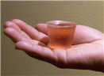
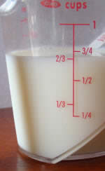
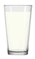
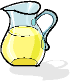
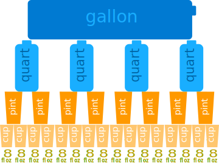

US Standard Volume
These are the most common measurements:
- Fluid Ounces
- Cups
- Pints
- Quarts
- Gallons

Fluid Ounces (fl oz) are small.
About how much fits in a small medicine cup.
Fluid Ounce!
"Fluid Ounce" is used for volume, "Ounce" for mass, and they are different.
- For example, 1 fluid ounce of honey has a mass of about 1.5 ounces!
- But for water, 1 fluid ounce has a mass of about 1 ounce.
If you mean an ounce of fluid say "fluid ounce" ("fl oz")

Cups
A small glass holds about 8 fluid ounces, which is also called 1 cup.
1 cup = 8 fluid ounces
Here we have 2/3 cup (two-thirds of a cup) of milk, or about 5 fluid ounces
By the way ... we can measure volume using special Measuring Cups ... !
|  |
PintsA pint is equal to 2 cups (example: a large glass of milk!) 1 pint = 2 cups = 16 fluid ounces |
|
When measuring many cups of liquid all put together we might want to use quarts. A quart (qt) is the same thing as 4 cups or 2 pints. 1 quart = 2 pints = 4 cups = 32 fluid ounces |
|
If we still need more liquid we can switch to using gallons. A gallon (gal) is the same as 16 cups or 8 pints or 4 quarts. It is the largest liquid measurement. (Note that a quart is a quarter of a gallon!) |
 |
In Summary:
1 gallon = 4 quarts = 8 pints = 16 cups = 128 fluid ounces

Other Volume Measurements
Cubic Inch
 Volume is length by length by length,
Volume is length by length by length,
so the Cubic Inch is a cube that is 1 inch on each side.
The Unit is written many ways, such as:
- in3
- inch3
- cu in
- cu inch
- cubic inches
- etc ...
Barrel of Oil
1 oil barrel (bbl) is equal to 42 gallons (or about 160 Liters)
More Examples
A fluid ounce is:
- very close to 30 milliliters (metric volume)
- more precisely 29.5735297 milliliters
A pint is:
- about half a liter
- more precisely 473.176473 milliliters
A quart is:
- about a liter
- more precisely 946.352946 milliliters
A gallon is:
- about 4 liters
- more precisely 3.7854118 liters